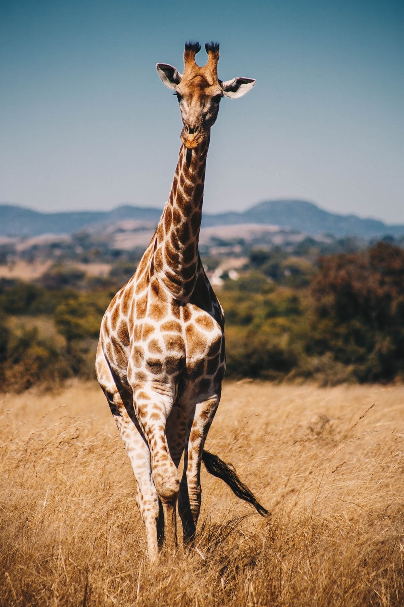

| Home |
Tamil Nadu |
Kerala |
Andhra Pradesh |
|  |
Name of the Sanctuary |
Link |
Location |
| Coringa Wildlife Sanctuary |
https://www.tripadvisor.in/Attraction_Review-g1584832-d5787981-Reviews-Coringa_Wildlife_Sanctuary-Kakinada_East_Godavari_District_Andhra_Pradesh.html |
Kakinada,Andra Pradesh |
| Kambalakonda Wildlife Sanctuary |
https://vizagtourism.org.in/kambalakonda-wildlife-sanctuary-vizag |
Visakhapatnam,Andra Pradesh |
| Koundinya Wildlife Sanctuary |
https://www.drishtiias.com/daily-updates/daily-news-analysis/koundinya-wildlife-sanctuary |
Chintamakulapalle,Andra Pradesh |
| Kolleru Wildlife Sanctuary |
https://www.tripadvisor.in/Attraction_Review-g9723099-d9717236-Reviews-Kolleru_Bird_Sanctuary-Kaikaluru_Krishna_District_Andhra_Pradesh.html |
Kolleru,Andhra Pradesh |
| Krishna Black Buck Sanctuary |
https://www.indianholiday.com/wildlife-india/krishna-sanctuary.html |
Gullalamoda,Andra Pradesh |
| Nellapattu Wildlife Sanctuary |
https://www.holidify.com/places/nellore/nelapattu-bird-sanctuary-sightseeing-5496.html |
Ayyapalem,Andra Pradesh |
| Pulicat Lake Wildlife Sanctuary |
https://www.transindiatravels.com/andhra-pradesh/pulicat-lake-bird-sanctuary/ |
Attakanitippa,Andra Pradesh |
| Rollapadu Wildlife Sanctuary |
https://en.wikipedia.org/wiki/Rollapadu_Wildlife_Sanctuary |
Rollapadu,Andra Pradesh |
| Sri Lankamalleswara Wildlife Sanctuary |
https://lbb.in/chennai/sri-lankamalleswara-wildlife-sanctuary-kadapa-chennai/ |
Kadapa,Andra Pradesh |
| Sri Penusila Narasimha Sanctuary |
https://wildtrails.in/sri-penusila-narasimha-wildlife-sanctuary/ |
Althurupadu,Andra Pradesh |
| Sri Venkateswara Wildlife Sanctuary |
https://www.trawell.in/andhra/tirumala/sri-venkateswara-wildlife-sanctuary |
Tirupati,Andra Pradesh |
 SOUTH INDIAN WILDLIFE SANCTUARY
SOUTH INDIAN WILDLIFE SANCTUARY